В этом посте будет Zero Inflated Poisson модель.
Анализ счетных величин при помощи обобщенных линейных моделей традиционно начинают с моделей, основанных на распределении Пуассона.
\(y_i \sim Poisson(\mu_i)\)
\(E(y_i) = \mu_i\), \(var(y_i) = \mu_i\)
\(log(\mu_i) = \eta_i\)
\(\eta_i = \beta_0 + \beta_1 x_{1i} + \ldots + \beta_{p - 1}x_{p - 1}\)
В случае, если данные не соответствуют свойствам этого распределения (дисперсия превышает мат.ожидание), может помочь использование отрицательного биномиального распределения. Дополнительный параметр \(k\) позволяет описать эту избыточность дисперсии.
\(y_i \sim NegBin(\mu_i, k)\)
\(E(y_i) = \mu_i\), \(var(y_i) = \mu_i + \mu_i^2 / k\)
\(log(\mu_i) = \eta_i\)
\(\eta_i = \beta_0 + \beta_1 x_{1i} + \ldots + \beta_{p - 1}x_{p - 1}\)
В смешанных моделях к последней строке уравнений добавляются еще и случайные эффекты.
Одним из источников сверхдисперсии может быть слишком большое число нулей в исходных данных — больше, чем предсказывает выбранное распределение. В случае избыточности нулей применяют zero-inflated или zero-altered (hurdle) модели.
Как разные модели ведут себя с нулями?
В обычных моделях для счетных данных у нулей один единственный источник — само распределение Пуассона или отр. биномиальное.
В zero-inflated моделях используется смесь распределений — Биномиального и одного из обычных счетных распределений. Смесь распределений — это такое распределение-химера, которое за счет своей биномиальной части способно производить больше нулей, чем исходное счетное. Некоторое количество нулей по-прежнему производит счетная часть, а недостающие — биномиальная. Чаще всего используется Zero-inflated Poisson (ZIP).
В zero-altered (hurdle) моделях используется два отдельных распределения. Биномиальное распределение предсказывает, будет ли ноль или какое-то положительное значение. Eсли предскано положительное значение, подключается модифицированное распределение для счетных данных, от которого “отрезаны” нули (truncated-at-zero distribution), и предсказывает счет.
Проиллюстрировать работу этих моделей можно попробовать на данных из статьи о поведении орангутанов (Chappell, Phillips, Noordwijk, Setia, & Thorpe, 2015). Авторы сразу подбирали ZIP модель, но оказалось, что ситуация может быть немного сложнее (или, вернее, проще).
Загружаем необходимые пакеты.
# Для чтения данных
library(readxl)
# Для предобработки данных
library(tidyverse)
# Для графиков
library(cowplot)
library(ggplot2)
theme_set(theme_bw())
# Для смешанных моделей
library(lme4)
library(glmmADMB)
library(glmmTMB)
# Для вспомогательных тестов
library(sjstats)
# Для пост-хоков
library(emmeans)
# Для графиков коэффициентов
library(broom.mixed)
library(dotwhisker)Читаем данные и готовим их к анализу. В исходной таблице с сайта PlosOne нехватает информации о числе дней, которое наблюдали за каждым орангутаном, но они есть в одной из таблиц в тексте. Добавим их в датафрейм.
gap <- read_excel('../../_data/gap-crossing-behaviour-Chappell-et-al-2015.xlsx',
sheet = 1,
col_types = c("text", "text", "numeric", "numeric", "text", "text"))
# Переименовываем переменные
colnames(gap) <- c("ID", "age","forearm", "AGC", "behaviour", "takeoff")
# Возраста орангутанов
ages = c("1","2","3","4","5","6","7","8","9","10","11","AF","AM")
# Порядок имен как в табл. 1
names <- c("Mawas", "Kino", "Jip", "Deri", "Jerry", "Streisel",
"Milo", "Kondor", "Juni", "Kerry", "Gismo", "Preman")
# Порядок разных типов поведения с рис. 3
behaviours <- c("NCU", "APP", "R", "R+APP", "S", "S+APP")
# Время наблюдений из табл.1
days <- c(10, 10, 10, 7, 10, 9, 7, 10, 5, 5, 4, 3)
# Добавляем информацию про число дней наблюдений
obs_time <- data.frame(ID = names, days, stringsAsFactors = FALSE)
gap <- left_join(gap, obs_time)
# Преобразуем в факторы и трансформируем то, что надо
gap <- gap %>% mutate(ID = factor(ID, levels = names),
age = factor(age, levels = ages),
behaviour = factor(behaviour, levels = behaviours),
takeoff = factor(takeoff),
forearm_std = as.numeric(scale(forearm)))Очень несбалансированные данные. По одному орангутану каждого возраста (и с соотв. длиной руки). Много наблюдений за каждым орангутаном, но есть не все сочетания типа поведения и опоры.
with(gap, table(ID, behaviour, takeoff))
, , takeoff = branch
behaviour
ID NCU APP R R+APP S S+APP
Mawas 70 8 1 0 0 0
Kino 299 74 62 21 1 0
Jip 199 131 52 20 3 1
Deri 133 73 30 9 3 5
Jerry 231 114 51 13 2 0
Streisel 225 145 31 21 0 1
Milo 187 94 39 6 2 2
Kondor 224 126 46 17 0 0
Juni 92 30 9 6 0 0
Kerry 85 54 3 3 0 0
Gismo 39 39 4 0 0 0
Preman 21 14 2 0 0 0
, , takeoff = liana
behaviour
ID NCU APP R R+APP S S+APP
Mawas 6 1 1 0 0 0
Kino 12 4 23 7 4 0
Jip 13 10 47 9 21 4
Deri 5 7 26 9 4 3
Jerry 18 14 66 13 3 0
Streisel 5 4 17 6 2 1
Milo 12 11 56 8 3 1
Kondor 9 6 45 4 4 0
Juni 9 5 23 7 1 1
Kerry 7 2 7 0 0 0
Gismo 5 1 18 4 0 0
Preman 3 1 5 1 0 0
, , takeoff = trunk
behaviour
ID NCU APP R R+APP S S+APP
Mawas 0 1 1 0 1 0
Kino 11 20 37 29 3 6
Jip 38 28 135 53 38 17
Deri 22 33 121 30 21 11
Jerry 67 83 388 75 22 12
Streisel 39 57 192 57 9 8
Milo 112 69 293 52 22 5
Kondor 153 112 550 84 14 11
Juni 129 71 309 42 2 3
Kerry 24 46 198 32 0 2
Gismo 108 64 344 38 8 6
Preman 67 30 156 26 6 2Нет выбросов у зависимой переменной AGC.
plot_grid(
ggplot(gap, aes(x = forearm, y = 1:nrow(gap))) + geom_point(),
ggplot(gap, aes(x = AGC, y = 1:nrow(gap))) + geom_point(),
nrow = 1)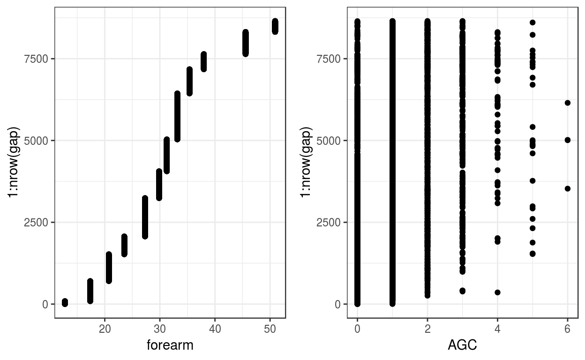
Пропорция нулей невелика — всего 23 %.
mean(gap$AGC == 0)
[1] 0.227693
# Рассчитаем относительную частоту перелезаний.
frec <- gap %>%
mutate(age = as.character(age)) %>%
group_by(ID, age, behaviour) %>%
summarise(.n = n(), freq = .n/unique(days)) %>%
ungroup() %>%
mutate(age = factor(age, levels = ages))
# Собственно график №3
ggplot(data = frec, aes(x = age, y = freq, fill = behaviour)) +
geom_bar(stat = 'summary', fun.y = mean, position = position_dodge()) +
scale_x_discrete(drop = FALSE)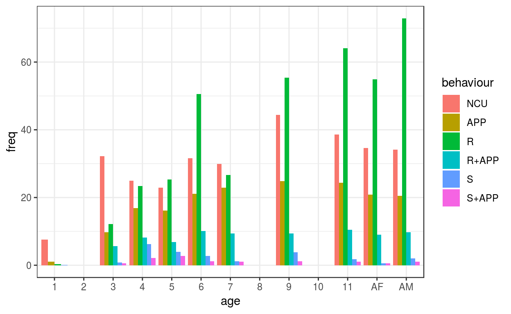
# Рассчитаем относительную частоту типов поддержки.
take <- gap %>%
group_by(ID, age, takeoff) %>%
summarise(.n = n(),
freq = .n/unique(days)) %>%
ungroup() %>%
mutate(age = factor(age, levels = ages))
# Fig.4
ggplot(data = take, aes(x = age, y = freq, fill = takeoff)) +
geom_bar(stat = 'summary', fun.y = mean, position = position_dodge()) +
scale_x_discrete(drop = FALSE)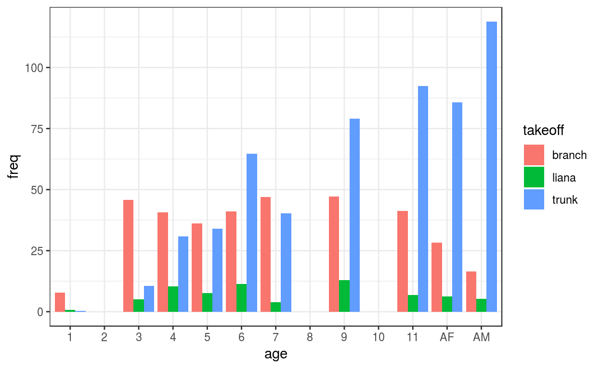
Из-за того, что есть по два орангутана старших возрастов, наблюдаемые частоты разных типов поддержки по возрастам можно посчитать двумя способами.
Можно сосчитать частоту для каждого ID, поделив на число дней для ID, затем усреднить частоты. Последняя строка в этом способе НЕ совпадает!!!
take1 <- gap %>%
group_by(ID, age, takeoff) %>%
summarise(.n = n(),
freq = .n/unique(days)) %>%
group_by(age, takeoff) %>% # По возрастам и типам поддержки
summarise(freq = mean(freq)) %>% # усредняем частоты
ungroup() %>%
mutate(age = factor(age, levels = ages)) %>%
arrange(age)
t_obs1 <- matrix(floor(take1$freq), nrow = 10, byrow = TRUE)
t_obs1
[,1] [,2] [,3]
[1,] 7 0 0
[2,] 45 5 10
[3,] 40 10 30
[4,] 36 7 34
[5,] 41 11 64
[6,] 47 3 40
[7,] 47 13 79
[8,] 41 6 92
[9,] 28 6 85
[10,] 16 5 118
# Хи-квадрат
chi_all1 <- chisq.test(t_obs1)
round(chi_all1$expected, 3)
[,1] [,2] [,3]
[1,] 2.522 0.478 4.000
[2,] 21.615 4.099 34.286
[3,] 28.820 5.466 45.714
[4,] 27.739 5.261 44.000
[5,] 41.789 7.925 66.286
[6,] 32.422 6.149 51.429
[7,] 50.075 9.497 79.429
[8,] 50.075 9.497 79.429
[9,] 42.870 8.130 68.000
[10,] 50.075 9.497 79.429Можно суммировать число наблюдений и дней по возрастам, затем сосчитать общую частоту. Предпоследняя строка в этом способе НЕ совпадает!!! Ровно в 2 раза.
take2 <- gap %>%
group_by(age, takeoff) %>%
summarise(.n = n(),
days = sum(unique(days)),
freq = .n/days) %>%
ungroup() %>%
mutate(age = factor(age, levels = ages)) %>%
arrange(age)
t_obs2 <- matrix(floor(take2$freq), nrow = 10, byrow = TRUE)
t_obs2
[,1] [,2] [,3]
[1,] 7 0 0
[2,] 45 5 10
[3,] 40 10 30
[4,] 36 7 34
[5,] 41 11 64
[6,] 47 3 40
[7,] 47 13 79
[8,] 41 6 92
[9,] 56 12 171
[10,] 17 5 122
# Хи-квадрат
chi_all2 <- chisq.test(t_obs2)
round(chi_all2$expected, 3)
[,1] [,2] [,3]
[1,] 2.419 0.462 4.119
[2,] 20.733 3.960 35.307
[3,] 27.644 5.280 47.076
[4,] 26.608 5.082 45.311
[5,] 40.084 7.655 68.260
[6,] 31.100 5.940 52.961
[7,] 48.032 9.173 81.795
[8,] 48.032 9.173 81.795
[9,] 82.588 15.773 140.640
[10,] 49.760 9.503 84.737Хи-квадрат в статье в табл.2 получен комбинацией обоих методов.
# Матрица ожидаемых как в статье
t_obs_rounded <- rbind(t_obs2[1:8, ], t_obs1[9, ], t_obs2[10, ])
colSums(t_obs_rounded)
[1] 349 66 556
rowSums(t_obs_rounded)
[1] 7 60 80 77 116 90 139 139 119 144
# Без округления
t_obs <- rbind(matrix(take2$freq, nrow = 10, byrow = TRUE)[1:8, ],
matrix(take1$freq, nrow = 10, byrow = TRUE)[9, ],
matrix(take2$freq, nrow = 10, byrow = TRUE)[10, ])
colSums(t_obs)
[1] 352.08571 70.63175 560.06508
rowSums(t_obs)
[1] 9.00000 61.30000 81.90000 77.85714 117.20000 91.11111
[7] 139.14286 140.50000 120.20000 144.57143
# Хи-квадрат по таблице без округления - все совпало
chi_all <- chisq.test(t_obs)
round(chi_all$expected, 3)
[,1] [,2] [,3]
[1,] 3.224 0.647 5.129
[2,] 21.961 4.406 34.933
[3,] 29.341 5.886 46.673
[4,] 27.893 5.596 44.369
[5,] 41.987 8.423 66.790
[6,] 32.641 6.548 51.922
[7,] 49.848 10.000 79.294
[8,] 50.335 10.098 80.068
[9,] 43.062 8.639 68.499
[10,] 51.793 10.390 82.388
# Посчитаем Пирсоновские остатки (В статье именно Пирсоновские)
round(resid(chi_all), 3)
[,1] [,2] [,3]
[1,] 2.604 0.190 -2.132
[2,] 5.066 0.283 -4.117
[3,] 2.079 1.861 -2.309
[4,] 1.562 0.896 -1.557
[5,] -0.137 1.026 -0.256
[6,] 2.513 -1.039 -1.624
[7,] -0.383 0.949 -0.033
[8,] -1.273 -1.038 1.378
[9,] -2.265 -0.830 2.090
[10,] -4.835 -1.539 4.380
round((t_obs - chi_all$expected) / sqrt(chi_all$expected), 3)
[,1] [,2] [,3]
[1,] 2.604 0.190 -2.132
[2,] 5.066 0.283 -4.117
[3,] 2.079 1.861 -2.309
[4,] 1.562 0.896 -1.557
[5,] -0.137 1.026 -0.256
[6,] 2.513 -1.039 -1.624
[7,] -0.383 0.949 -0.033
[8,] -1.273 -1.038 1.378
[9,] -2.265 -0.830 2.090
[10,] -4.835 -1.539 4.380
# # Стандартизованные остатки (Agresti, 2007, section 2.4.5 )
# chi_all$stdres
ggplot(gap, aes(x = forearm,
y = (AGC * 100) / forearm, color = behaviour)) +
geom_point(position = position_jitter(width = 0.5))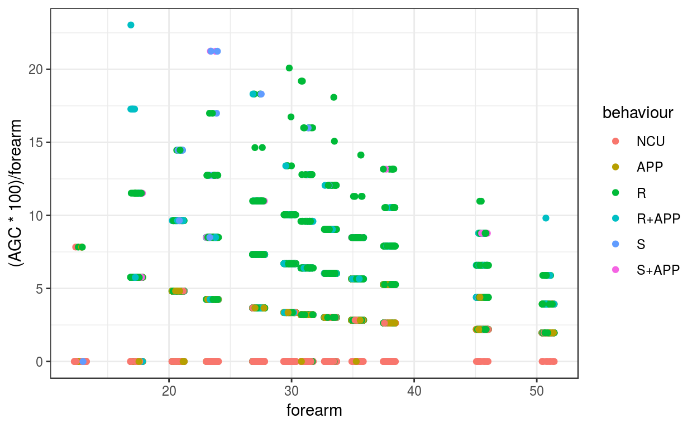
Традиционно можно было бы начать с GLMM, основанной на распределении Пуассона. Авторы пропускают этот шаг, и сразу подбирают ZIP GLMM отметив, что в данных много нулей. Мы пойдем по порядку.
\(AGC_{ij} \sim Poisson(\mu_{ij})\)
\(E(AGC_{ij}) = \mu_{ij}\), \(var(AGC_{ij}) = \mu_{ij}\)
\(\begin{aligned}log(\mu_{ij}) = \beta_0 + \beta_{2}Behav_{APP\ ij} + \beta_{3}Behav_{R\ ij} + \\ + \beta_{4}Behav_{RAPP\ ij} + \beta_{5}Behav_{S\ ij} + \beta_{6}Behav_{SAPP\ ij} + \\ + \beta_{7}Sup_{liana\ ij} + \beta_{8}Sup_{trunk\ ij} + \beta_{9}Arm_{std\ ij} + \\ + \beta_{10}Behav_{APP\ ij}Sup_{liana\ ij} + \beta_{11}Behav_{R\ ij}Sup_{liana\ ij} + \\+ \beta_{12}Behav_{RAPP\ ij}Sup_{liana\ ij} + \beta_{13}Behav_{S\ ij}Sup_{liana\ ij} + \\ + \beta_{14}Behav_{SAPP\ ij}Sup_{liana\ ij} + \beta_{15}Behav_{APP\ ij}Sup_{trunk\ ij} + \\ + \beta_{16}Behav_{R\ ij}Sup_{trunk\ ij} + \beta_{17}Behav_{RAPP\ ij}Sup_{trunk\ ij} + \\ + \beta_{18}Behav_{S\ ij}Sup_{trunk\ ij} + \beta_{19}Behav_{SAPP\ ij}Sup_{trunk\ ij} + \\ + \beta_{20}Behav_{APP\ ij}Arm_{std\ ij} + \beta_{21}Behav_{R\ ij}Arm_{std\ ij} + \\ + \beta_{22}Behav_{RAPP\ ij}Arm_{std\ ij} + \beta_{23}Behav_{S\ ij}Arm_{std\ ij} + \\ + \beta_{24}Behav_{SAPP\ ij}Arm_{std\ ij} + \beta{25}Sup_{liana\ ij} Arm_{std\ ij} + \\ + \beta{26}Sup_{trunk\ ij} Arm_{std\ ij}ID_{j}\end{aligned}\)
\(b_j \sim N(0, \sigma^2_{ID})\)
Последняя строчка этого уравнения в матричном виде, т.к. в модели довольно много коэффициентов, ведь в нее входят два дискретных предиктора takeoff (способ поддержки) behaviour (тип поведения), непрерывный предиктор forearm_std (стандартизованная длина предплечья) и все двухфакторные взаимодействия между ними.
Кроме того, в модели есть случайный эффект индивидуума \(b_j\).
Наконец, здесь лучше стандартизовать непрерывный предиктор и увеличить число итераций, чтобы модель сошлась.
M1 <- glmer(AGC ~ (behaviour + takeoff + forearm_std)^2 + (1|ID),
data = gap, family = 'poisson',
control = glmerControl(optimizer = 'bobyqa',
optCtrl = list(maxfun = 4e6)))Проверим, соответствует ли зависимость дисперсии и среднего тому, что можно ожидать при распределении Пуассона.
overdisp(M1)
# Overdispersion test
dispersion ratio = 0.3507
Pearson's Chi-Squared = 3024.4960
p-value = 1.0000Сверхдисперсии нет! Можно было бы и дальше продолжать работать с этой моделью. Но, возможно, у нее есть еще другой недостаток. Нулей в данных сильно меньше, чем может предсказать Пуассоновская модель. Т.е. модель “перепредсказывает” число нулей.
zero_count(M1)
# Zero-Count overfitting
Observed zero-counts: 1970
Predicted zero-counts: 3536
Ratio: 1.79На графиках остатков не заметно ничего особенно подозрительного.
M1_diag <- data.frame(
gap,
.fitted = predict(M1, type = "response"),
.pears_resid = residuals(M1, type = "pearson"))
plot_grid(
ggplot(M1_diag, aes(x = .fitted, y = .pears_resid)) + geom_point() + geom_smooth(),
ggplot(M1_diag, aes(x = forearm_std, y = .pears_resid)) + geom_point() + geom_smooth(),
ggplot(M1_diag, aes(x = ID, y = .pears_resid)) + geom_boxplot(),
ggplot(M1_diag, aes(x = behaviour, y = .pears_resid)) + geom_boxplot(),
ggplot(M1_diag, aes(x = takeoff, y = .pears_resid)) + geom_boxplot(),
nrow = 2)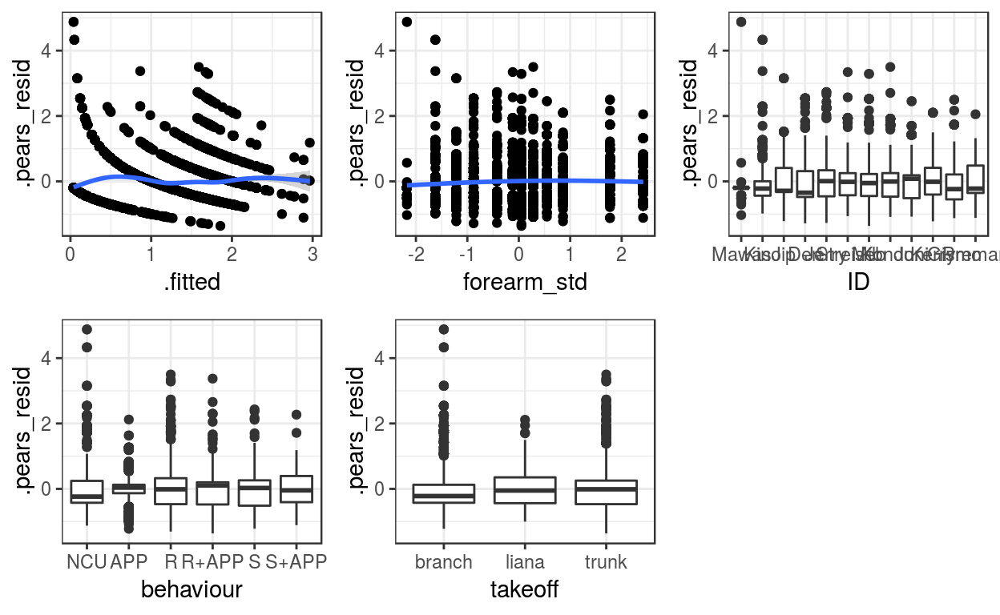
Если мы посмотрим одновременно на остатки по типам поведения для разных орангутанов, то заметно, что модель плохо предсказывает AGC трех самых молодых орангутанов (большие остатки на графиках у величнт, для которых предсказано нулевое значение).
ggplot(M1_diag, aes(x = .fitted, y = .pears_resid, colour = behaviour)) +
geom_point(position = position_jitter(width = 0.1, height = 0.1), alpha = 0.3) +
facet_wrap(~ ID)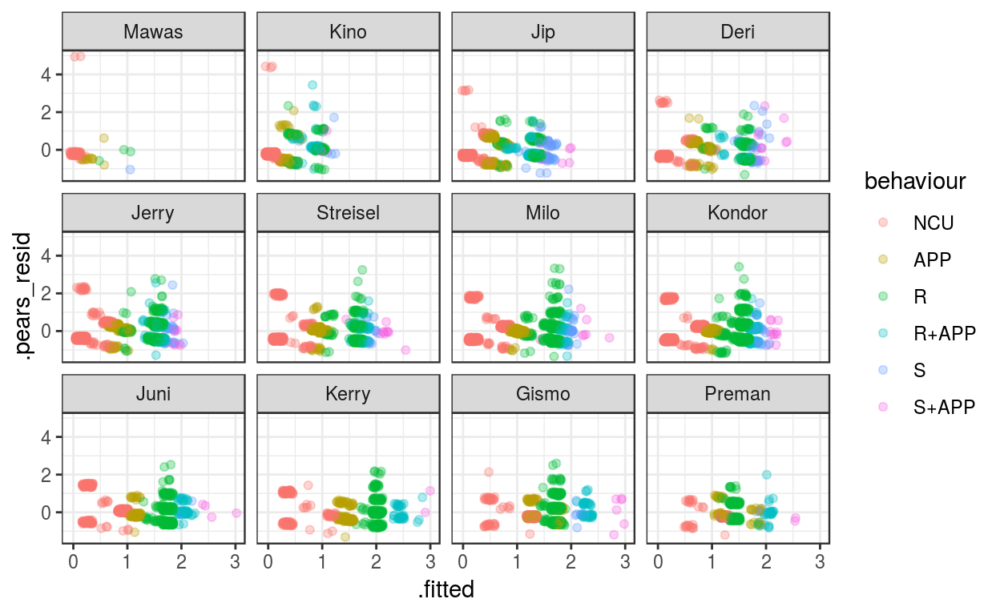
Какая модель у нас получилась? Посмотрим на summary() и запишем уравнение.
summary(M1)
Generalized linear mixed model fit by maximum likelihood (Laplace
Approximation) [glmerMod]
Family: poisson ( log )
Formula: AGC ~ (behaviour + takeoff + forearm_std)^2 + (1 | ID)
Data: gap
Control:
glmerControl(optimizer = "bobyqa", optCtrl = list(maxfun = 4e+06))
AIC BIC logLik deviance df.resid
17879.3 18070.1 -8912.7 17825.3 8625
Scaled residuals:
Min 1Q Median 3Q Max
-1.3627 -0.4577 -0.1330 0.2523 4.8779
Random effects:
Groups Name Variance Std.Dev.
ID (Intercept) 0.02942 0.1715
Number of obs: 8652, groups: ID, 12
Fixed effects:
Estimate Std. Error z value Pr(>|z|)
(Intercept) -1.75343 0.07804 -22.470 < 2e-16 ***
behaviourAPP 1.56937 0.06870 22.845 < 2e-16 ***
behaviourR 1.80549 0.08273 21.823 < 2e-16 ***
behaviourR+APP 2.17812 0.10052 21.669 < 2e-16 ***
behaviourS 2.26759 0.26709 8.490 < 2e-16 ***
behaviourS+APP 2.00160 0.32475 6.163 7.12e-10 ***
takeoffliana 0.93783 0.15800 5.936 2.93e-09 ***
takeofftrunk 1.37737 0.07391 18.636 < 2e-16 ***
forearm_std 0.61254 0.05978 10.246 < 2e-16 ***
behaviourAPP:takeoffliana -0.76669 0.20391 -3.760 0.000170 ***
behaviourR:takeoffliana -0.65590 0.17473 -3.754 0.000174 ***
behaviourR+APP:takeoffliana -0.88401 0.20189 -4.379 1.19e-05 ***
behaviourS:takeoffliana -0.82329 0.32521 -2.532 0.011354 *
behaviourS+APP:takeoffliana -0.30924 0.41177 -0.751 0.452650
behaviourAPP:takeofftrunk -1.26544 0.09064 -13.961 < 2e-16 ***
behaviourR:takeofftrunk -1.01379 0.09641 -10.515 < 2e-16 ***
behaviourR+APP:takeofftrunk -1.30775 0.11624 -11.251 < 2e-16 ***
behaviourS:takeofftrunk -1.33913 0.27690 -4.836 1.32e-06 ***
behaviourS+APP:takeofftrunk -0.94894 0.33704 -2.815 0.004870 **
behaviourAPP:forearm_std -0.16504 0.04445 -3.713 0.000205 ***
behaviourR:forearm_std -0.27280 0.03725 -7.323 2.42e-13 ***
behaviourR+APP:forearm_std -0.15313 0.04628 -3.309 0.000937 ***
behaviourS:forearm_std -0.22330 0.07021 -3.180 0.001471 **
behaviourS+APP:forearm_std -0.12873 0.08301 -1.551 0.120942
takeoffliana:forearm_std -0.27069 0.05501 -4.921 8.61e-07 ***
takeofftrunk:forearm_std -0.23934 0.03837 -6.237 4.45e-10 ***
---
Signif. codes: 0 '***' 0.001 '**' 0.01 '*' 0.05 '.' 0.1 ' ' 1\(AGC_{ij} \sim Poisson(\mu_{ij})\)
\(E(AGC_{ij}) = \mu_{ij}\), \(var(AGC_{ij}) = \mu_{ij}\)
\(\begin{aligned}log(\mu_{ij}) = -1.753 + 1.569 Behav_{APP\ ij} + 1.805 Behav_{R\ ij} + \\ + 2.178 Behav_{RAPP\ ij} + 2.268 Behav_{S\ ij} + 2.002 Behav_{SAPP\ ij} + \\ + 0.938 Sup_{liana\ ij} + 1.377 Sup_{trunk\ ij} + 0.613 Arm_{std\ ij} - \\ - 0.767 Behav_{APP\ ij}Sup_{liana\ ij} - 0.656 Behav_{R\ ij}Sup_{liana\ ij} - \\ - 0.884 Behav_{RAPP\ ij}Sup_{liana\ ij} - 0.823 Behav_{S\ ij}Sup_{liana\ ij} - \\ - 0.309 Behav_{SAPP\ ij}Sup_{liana\ ij} - 1.265 Behav_{APP\ ij}Sup_{trunk\ ij} - \\ - 1.014 Behav_{R\ ij}Sup_{trunk\ ij} - 1.308 Behav_{RAPP\ ij}Sup_{trunk\ ij} - \\ - 1.339 Behav_{S\ ij}Sup_{trunk\ ij} - 0.949 Behav_{SAPP\ ij}Sup_{trunk\ ij} - \\ - 0.165 Behav_{APP\ ij}Arm_{std\ ij} - 0.273 Behav_{R\ ij}Arm_{std\ ij} - \\ - 0.153 Behav_{RAPP\ ij}Arm_{std\ ij} - 0.223 Behav_{S\ ij}Arm_{std\ ij} - \\ - 0.129 Behav_{SAPP\ ij}Arm_{std\ ij} - 0.271 Sup_{liana\ ij} Arm_{std\ ij} - \\ - 0.239 Sup_{trunk\ ij} Arm_{std\ ij} + ID_{j}\end{aligned}\)
\(b_j \sim N(0, \sigma^2_{ID})\)
Все взаимодействия, включенные в модель, оказались статистически значимыми (тесты отношения правдоподобий, \(p < 0.01\)). Т.е. длина пересекаемого промежутка между деревьями по-разному зависела от длины руки для разных типов поддержки и типов поведения. Так же на нее по-разному влиял тип поведения в зависимости от типа поддержки.
drop1(M1, test = "Chi")
Single term deletions
Model:
AGC ~ (behaviour + takeoff + forearm_std)^2 + (1 | ID)
Df AIC LRT Pr(Chi)
<none> 17879
behaviour:takeoff 10 18091 231.324 < 2.2e-16 ***
behaviour:forearm_std 5 17929 59.493 1.547e-11 ***
takeoff:forearm_std 2 17916 40.341 1.738e-09 ***
---
Signif. codes: 0 '***' 0.001 '**' 0.01 '*' 0.05 '.' 0.1 ' ' 1Чтобы узнать, в чем именно заключались различия, можно было бы сделать пост-хок тест. Например, для орангутанов среднего размера (со средней длиной предплечья).
emmeans(M1, specs = pairwise ~ takeoff | behaviour, type = 'response')$contrasts
behaviour = NCU:
contrast ratio SE df z.ratio p.value
branch / liana 0.3914745 0.06185270 Inf -5.936 <.0001
branch / trunk 0.2522407 0.01864315 Inf -18.636 <.0001
liana / trunk 0.6443348 0.09911774 Inf -2.857 0.0119
behaviour = APP:
contrast ratio SE df z.ratio p.value
branch / liana 0.8427026 0.10865518 Inf -1.327 0.3799
branch / trunk 0.8941099 0.04929109 Inf -2.030 0.1050
liana / trunk 1.0610028 0.13916044 Inf 0.451 0.8938
behaviour = R:
contrast ratio SE df z.ratio p.value
branch / liana 0.7543226 0.05578785 Inf -3.812 0.0004
branch / trunk 0.6951803 0.04218786 Inf -5.991 <.0001
liana / trunk 0.9215956 0.04512429 Inf -1.668 0.2178
behaviour = R+APP:
contrast ratio SE df z.ratio p.value
branch / liana 0.9475964 0.11892444 Inf -0.429 0.9036
branch / trunk 0.9327462 0.08286875 Inf -0.784 0.7131
liana / trunk 0.9843285 0.10028177 Inf -0.155 0.9868
behaviour = S:
contrast ratio SE df z.ratio p.value
branch / liana 0.8917728 0.25334967 Inf -0.403 0.9143
branch / trunk 0.9624817 0.25607467 Inf -0.144 0.9887
liana / trunk 1.0792902 0.15049593 Inf 0.547 0.8479
behaviour = S+APP:
contrast ratio SE df z.ratio p.value
branch / liana 0.5333431 0.20255665 Inf -1.655 0.2227
branch / trunk 0.6515312 0.21374953 Inf -1.306 0.3918
liana / trunk 1.2215986 0.27872566 Inf 0.877 0.6547
P value adjustment: tukey method for comparing a family of 3 estimates
Tests are performed on the log scale
new_data_M1 <- gap %>% group_by(behaviour, takeoff) %>%
do(data.frame(forearm_std = unique(.$forearm_std),
forearm = unique(.$forearm))) %>%
ungroup()
new_data_M1 <- new_data_M1 %>%
mutate(.fit = predict(M1, new_data_M1, type = "response", re.form = NA))
ggplot(new_data_M1, aes(x = forearm, y = .fit, colour = takeoff)) +
geom_point() +
geom_line() +
facet_wrap(~ behaviour) +
labs(y = 'Predicted AGC')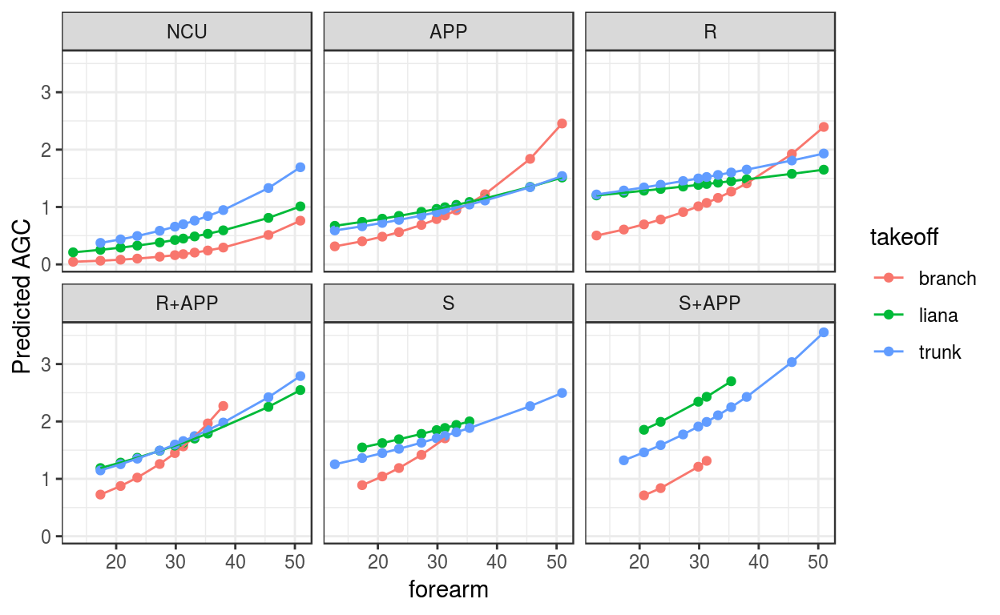
glmmADMB как в статьеАвторы статьи использовали Zero Inflated Poisson GLMM, мотивировав это наличием сверхдисперсии и большим числом нулей. Как мы это только что видели в предыдущей части, ситуация, скорее, обратная. Поэтому заранее можно предположить, что нам не поможет ZIP модель. Здесь мы ее обсудим только ради искусства.
\(AGC_{ij} \sim ZIP(\mu_{ij}, \pi_{ij})\)
\(E(AGC_{ij}) = (1 - \pi_{ij}) \mu_{ij}\), \(var(AGC_{ij}) = \mu_{ij} + \cfrac{\pi_{ij}}{(1 - \pi_{ij})} \mu_{ij}^2 = (1 - \pi_{ij}) \mu_{ij}(1 + \mu_{ij}\pi_{ij})\)
\(logit(\pi_{ij}) = \beta_0\)
\(log(\mu_{ij}) = \beta_0 + \beta_{2}Behav_{APP\ ij} + \beta_{3}Behav_{R\ ij} + \\ + \beta_{4}Behav_{RAPP\ ij} + \beta_{5}Behav_{S\ ij} + \beta_{6}Behav_{SAPP\ ij} + \\ + \beta_{7}Sup_{liana\ ij} + \beta_{8}Sup_{trunk\ ij} + \beta_{9}Arm_{std\ ij} + \\ + \beta_{10}Behav_{APP\ ij}Sup_{liana\ ij} + \beta_{11}Behav_{R\ ij}Sup_{liana\ ij} + \\+ \beta_{12}Behav_{RAPP\ ij}Sup_{liana\ ij} + \beta_{13}Behav_{S\ ij}Sup_{liana\ ij} + \\ + \beta_{14}Behav_{SAPP\ ij}Sup_{liana\ ij} + \beta_{15}Behav_{APP\ ij}Sup_{trunk\ ij} + \\ + \beta_{16}Behav_{R\ ij}Sup_{trunk\ ij} + \beta_{17}Behav_{RAPP\ ij}Sup_{trunk\ ij} + \\ + \beta_{18}Behav_{S\ ij}Sup_{trunk\ ij} + \beta_{19}Behav_{SAPP\ ij}Sup_{trunk\ ij} + \\ + \beta_{20}Behav_{APP\ ij}Arm_{std\ ij} + \beta_{21}Behav_{R\ ij}Arm_{std\ ij} + \\ + \beta_{22}Behav_{RAPP\ ij}Arm_{std\ ij} + \beta_{23}Behav_{S\ ij}Arm_{std\ ij} + \\ + \beta_{24}Behav_{SAPP\ ij}Arm_{std\ ij} + \beta{25}Sup_{liana\ ij} Arm_{std\ ij} + \\ + \beta{26}Sup_{trunk\ ij} Arm_{std\ ij}ID_{j}\)
\(b_j \sim N(0, \sigma^2_{ID})\)
\(\pi\) — вероятность нуля из биномиальной части.
# Z1 <- glmmadmb(AGC ~ (behaviour + takeoff + forearm_std)^2 ,
# data = gap, family = 'poisson', zeroInflation = TRUE, random = ~ (1|ID))
# save(Z1, file = 'Z1.RData')
load('Z1.RData')Проверка на сверхдисперсию.
p <- length(fixef(Z1)) + length(ranef(Z1)) + Z1$zeroInflation
sum(resid(Z1, type = 'pearson')^2) / (nrow(gap) - p)
[1] 0.3506971
# Вот как считает пирсоновские остатки glmmADMB
# Z1$residuals/Z1$sd.est, внутри знаменатель, видимо, считается как sqrt(mu):
# getAnywhere(residuals.glmmadmb)
# Сверхдисперсия вручную
# Пуассоновская часть
X_count <- model.matrix(~ (behaviour + takeoff + forearm_std)^2, data = gap)
beta_count <- fixef(Z1)
name_ID <- as.numeric(factor(gap$ID, levels = names))
a <- ranef(Z1)$ID
mu_count <- exp(X_count %*% beta_count + a[name_ID])
# fitted(Z1) это на самом деле mu_count
# head(cbind(fitted(Z1), mu_count, E_y))
# Биномиальная часть отсутствует. Не понимаю, как
# это получается, но ее результаты уже включены в
# пуассоновскую часть
# И вот это уже можно не включать в расчеты
# pi_zi <- exp(Z1$pz)/(1 + exp(Z1$pz))
# Считаем пирсоновские остатки вручную
# Формулы для матожидания и дисперсии будут
# использоваться для Пуассоновской части
# E(y) = mu
# Var(y) = mu
E_y <- mu_count
Var_y <- mu_count
# Пирсоновские остатки
e_pears <- (gap$AGC - E_y) / sqrt(Var_y)
N <- nrow(gap)
p <- length(fixef(Z1)) + length(ranef(Z1)) + Z1$zeroInflation
sum(e_pears^2)/(N - p)
[1] 0.3507115
# zero_count(Z1)
# Как установили во время рассчета степени сверхдисперсии,
# биномиальная часть отсутствует.
mu_Z1 <- predict(Z1, type = "response")
# Предсказанное число нулей
(pred_zero <- round(sum(dpois(x = 0, lambda = mu_Z1))))
[1] 3636
# Наблюдаемое число нулей
(obs_zero <- sum(gap$AGC == 0))
[1] 1970
# Соотношение
pred_zero/obs_zero
[1] 1.845685Графики остатков.
Z1_diag <- data.frame(
gap,
.fitted = predict(Z1, type = "response"),
.pears_resid = residuals(Z1, type = "pearson"))
plot_grid(
ggplot(Z1_diag, aes(x = .fitted, y = .pears_resid)) + geom_point() + geom_smooth(),
ggplot(Z1_diag, aes(x = forearm_std, y = .pears_resid)) + geom_point() + geom_smooth(),
ggplot(Z1_diag, aes(x = ID, y = .pears_resid)) + geom_boxplot(),
ggplot(Z1_diag, aes(x = behaviour, y = .pears_resid)) + geom_boxplot(),
ggplot(Z1_diag, aes(x = takeoff, y = .pears_resid)) + geom_boxplot(),
nrow = 2)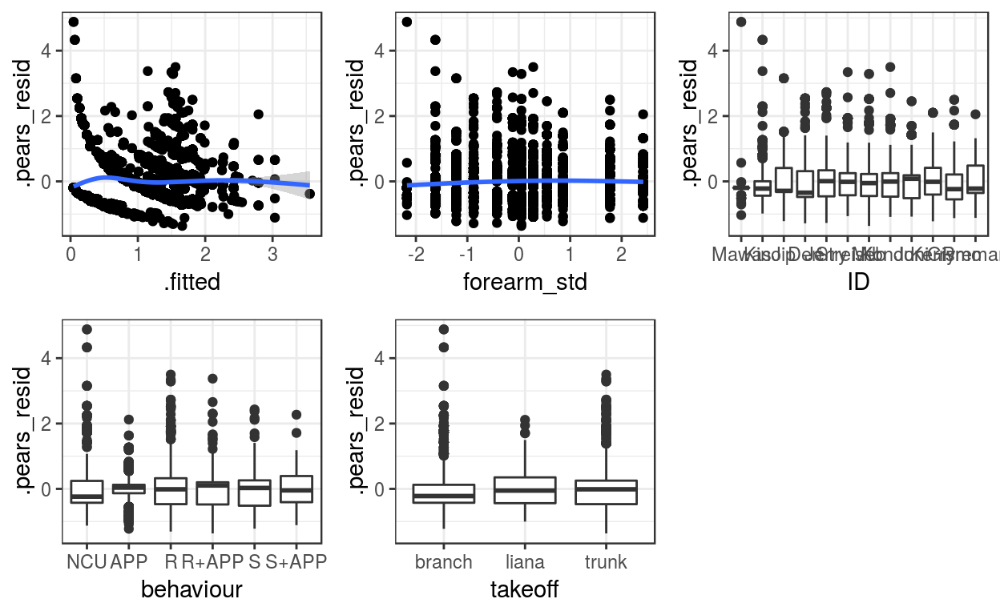
drop1(Z1)
Single term deletions
Model:
AGC ~ (behaviour + takeoff + forearm_std)^2
Df AIC
<none> 17881
behaviour:takeoff 10 18093
behaviour:forearm_std 5 17931
takeoff:forearm_std 2 17918
new_data_Z1 <- gap %>% group_by(behaviour, takeoff) %>%
do(data.frame(forearm_std = unique(.$forearm_std),
forearm = unique(.$forearm))) %>%
ungroup()
new_data_Z1 <- new_data_Z1 %>%
mutate(.fit = predict(Z1, new_data_Z1, type = "response"))
ggplot(new_data_Z1, aes(x = forearm, y = .fit, colour = takeoff)) +
geom_point() +
geom_line() +
facet_wrap(~ behaviour) +
labs(y = 'Predicted AGC')glmmADMB как в статьеАльтернативный вариант подбора ZIP GLMMM при помощи пакета glmmTMB гораздо более быстрый, но в нем нет многих полезных функций. Например, Пирсоновские остатки приходится считать вручную.
Формулу модели для сопоставимости можем взять такую же, как в модели для glmmadmb(), хотя glmmTMB() умеет подбирать и гораздо более сложные модели с предикторами и случайными эффектами в бинарной части модели.
\(AGC_{ij} \sim ZIP(\mu_{ij}, \pi_{ij})\)
\(E(AGC_{ij}) = (1 - \pi_{ij}) \mu_{ij}\), \(var(AGC_{ij}) = \mu_{ij} + \cfrac{\pi_{ij}}{(1 - \pi_{ij})} \mu_{ij}^2 = (1 - \pi_{ij}) \mu_{ij}(1 + \mu_{ij}\pi_{ij})\)
\(logit(\pi_{ij}) = \beta_0\)
\(log(\mu_{ij}) = \beta_0 + \beta_{2}Behav_{APP\ ij} + \beta_{3}Behav_{R\ ij} + \\ + \beta_{4}Behav_{RAPP\ ij} + \beta_{5}Behav_{S\ ij} + \beta_{6}Behav_{SAPP\ ij} + \\ + \beta_{7}Sup_{liana\ ij} + \beta_{8}Sup_{trunk\ ij} + \beta_{9}Arm_{std\ ij} + \\ + \beta_{10}Behav_{APP\ ij}Sup_{liana\ ij} + \beta_{11}Behav_{R\ ij}Sup_{liana\ ij} + \\+ \beta_{12}Behav_{RAPP\ ij}Sup_{liana\ ij} + \beta_{13}Behav_{S\ ij}Sup_{liana\ ij} + \\ + \beta_{14}Behav_{SAPP\ ij}Sup_{liana\ ij} + \beta_{15}Behav_{APP\ ij}Sup_{trunk\ ij} + \\ + \beta_{16}Behav_{R\ ij}Sup_{trunk\ ij} + \beta_{17}Behav_{RAPP\ ij}Sup_{trunk\ ij} + \\ + \beta_{18}Behav_{S\ ij}Sup_{trunk\ ij} + \beta_{19}Behav_{SAPP\ ij}Sup_{trunk\ ij} + \\ + \beta_{20}Behav_{APP\ ij}Arm_{std\ ij} + \beta_{21}Behav_{R\ ij}Arm_{std\ ij} + \\ + \beta_{22}Behav_{RAPP\ ij}Arm_{std\ ij} + \beta_{23}Behav_{S\ ij}Arm_{std\ ij} + \\ + \beta_{24}Behav_{SAPP\ ij}Arm_{std\ ij} + \beta{25}Sup_{liana\ ij} Arm_{std\ ij} + \\ + \beta{26}Sup_{trunk\ ij} Arm_{std\ ij}ID_{j}\)
\(b_j \sim N(0, \sigma^2_{ID})\)
\(\pi\) — вероятность нуля из биномиальной части.
# Overdispersion test
dispersion ratio = 0.3507
Pearson's Chi-Squared = 3024.5086
p-value = 1.0000
B1 <- glmmTMB(AGC ~ (behaviour + takeoff + forearm_std)^2 + (1|ID), data = gap, family = poisson, ziformula = ~ 1)Проверка на сверхдисперсию.
# пирсоновские остатки не считаются
# resid(B1, type = 'pearson')
# overdisp(B1)
# Сверхдисперсия вручную
# Пуассоновская часто
X_count <- model.matrix(~ (behaviour + takeoff + forearm_std)^2, data = gap)
beta_count <- fixef(B1)$cond
name_ID <- as.numeric(factor(gap$ID, levels = names))
a <- ranef(B1)$cond$ID
mu_count <- exp(X_count %*% beta_count + a[name_ID,])
# Биномиальная часть
X_zi <- model.matrix(~ 1, data = gap)
beta_zi <- fixef(B1)$zi
pi_zi <- exp(X_zi %*% beta_zi)/(1 + exp(X_zi %*% beta_zi))
# Считаем пирсоновские остатки вручную
# Формулы для матожидания и дисперсии
# E(y) = (1 - pi) * mu
# Var(y) = mu + pi / (1 - pi) * mu^2
# Кстати, это то же самое, что Var(y) = (1−π)μ(1+μπ)
E_y <- (1 - pi_zi) * mu_count
Var_y <- mu_count + pi_zi / (1 - pi_zi) * mu_count^2
# Пирсоновские остатки
e_pears <- (gap$AGC - E_y) / sqrt(Var_y)
# Сверхдисперсия
N <- nrow(gap)
p <- length(fixef(B1)$cond) + length(fixef(B1)$zi) + 1
sum(e_pears^2)/(N - p)
[1] 0.3507062
# ОкГрафики остатков
B1_diag <- data.frame(
gap,
.fitted = predict(B1, type = "response"),
.pears_resid = e_pears)
plot_grid(
ggplot(B1_diag, aes(x = .fitted, y = .pears_resid)) + geom_point() + geom_smooth(),
ggplot(B1_diag, aes(x = forearm_std, y = .pears_resid)) + geom_point() + geom_smooth(),
ggplot(B1_diag, aes(x = ID, y = .pears_resid)) + geom_boxplot(),
ggplot(B1_diag, aes(x = behaviour, y = .pears_resid)) + geom_boxplot(),
ggplot(B1_diag, aes(x = takeoff, y = .pears_resid)) + geom_boxplot(),
nrow = 2)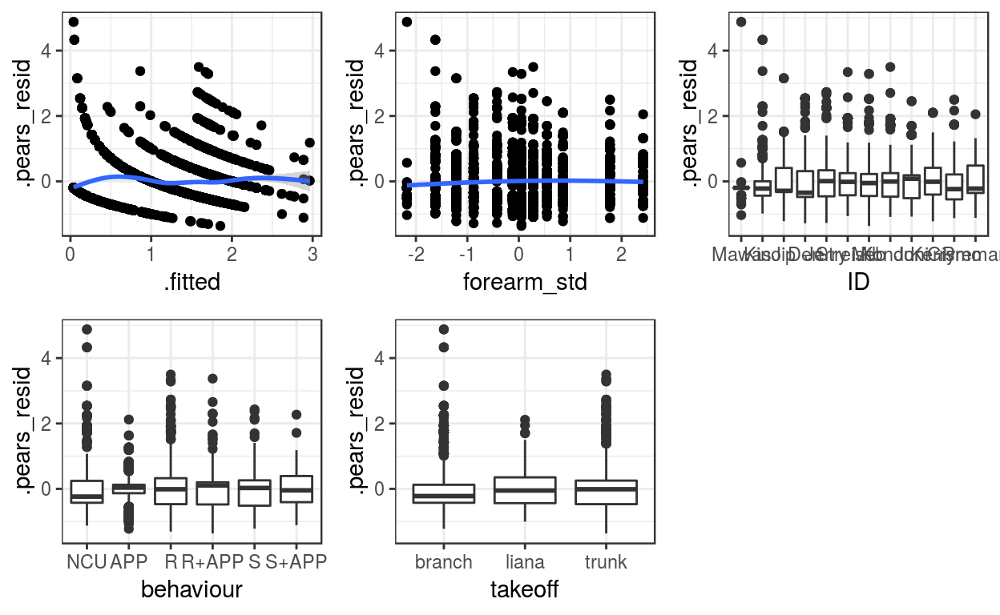
# drop1(B1)
new_data_B1_re <- gap %>% group_by(ID, behaviour, takeoff) %>%
do(data.frame(forearm_std = unique(.$forearm_std),
forearm = unique(.$forearm))) %>%
ungroup()
new_data_B1_re <- new_data_B1_re %>%
mutate(.fit = predict(B1, new_data_B1_re, type = "response"))
ggplot(new_data_B1_re, aes(x = forearm, y = .fit, colour = takeoff)) +
geom_point() +
geom_line() +
facet_wrap(~ behaviour) +
labs(y = 'Predicted AGC with ran.ef.')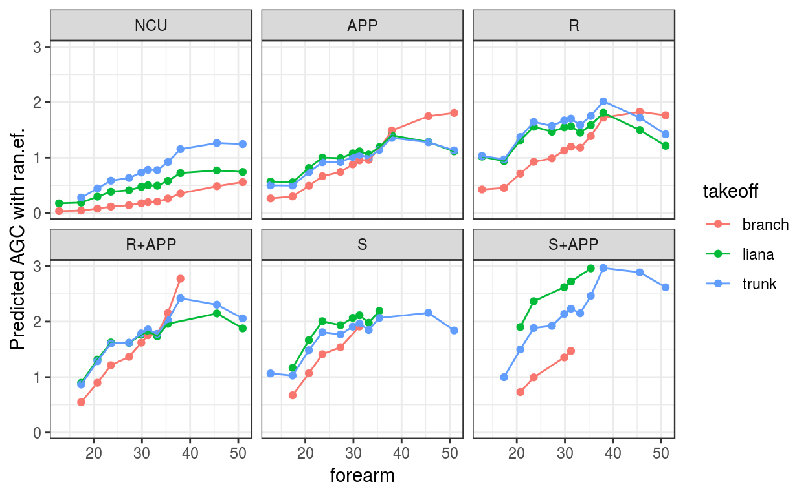
# Делаем вручную, т.к. или только со случайным эффектом, или ошибка
# Error in predict.glmmTMB(B1, new_data_B1, type = "response", re.form = NA) :
# re.form not yet implemented
new_data_B1 <- gap %>% group_by(behaviour, takeoff) %>%
do(data.frame(forearm_std = unique(.$forearm_std),
forearm = unique(.$forearm))) %>%
ungroup()
# Счетная часть
X_count <- model.matrix(~ (behaviour + takeoff + forearm_std)^2, data = new_data_B1)
betas_count <- fixef(B1)$cond
mu_count <- exp(X_count %*% betas_count)
# Бинарная часть
X_bin <- model.matrix(~ 1, data = new_data_B1)
betas_bin <- fixef(B1)$zi
inv_logit <- function(x) exp(x)/(1 + exp(x))
pi_bin <- inv_logit(X_bin %*% betas_bin)
# E(y) = (1 - pi) * mu
new_data <- .fit <- (1 - pi_bin) * mu_count
ggplot(new_data_B1, aes(x = forearm, y = .fit, colour = takeoff)) +
geom_point() +
geom_line() +
facet_wrap(~ behaviour) +
labs(y = 'Predicted AGC with ran.ef.')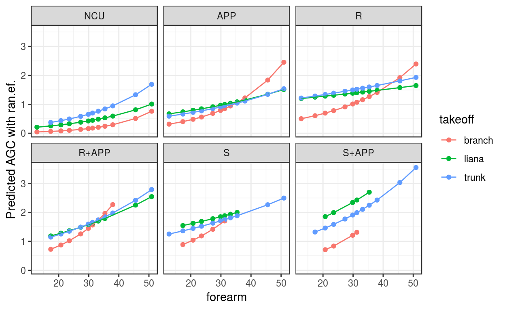
Модели разных типов и подобранные при помощи разных пакетов дают поразительно похожие оценки коэффициентов фиксированной части.
dwplot(list(M1, Z1, B1), effects = 'fixed')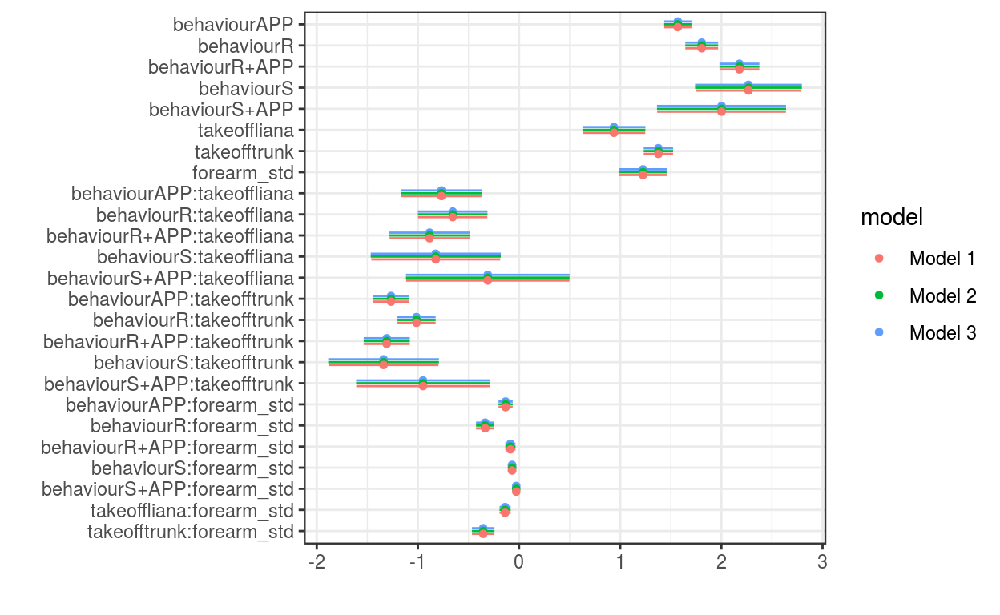
Chappell, J., Phillips, A. C., Noordwijk, M. A. van, Setia, T. M., & Thorpe, S. K. (2015). The ontogeny of gap crossing behaviour in bornean orangutans (pongo pygmaeus wurmbii). PloS One, 10(7), e0130291.